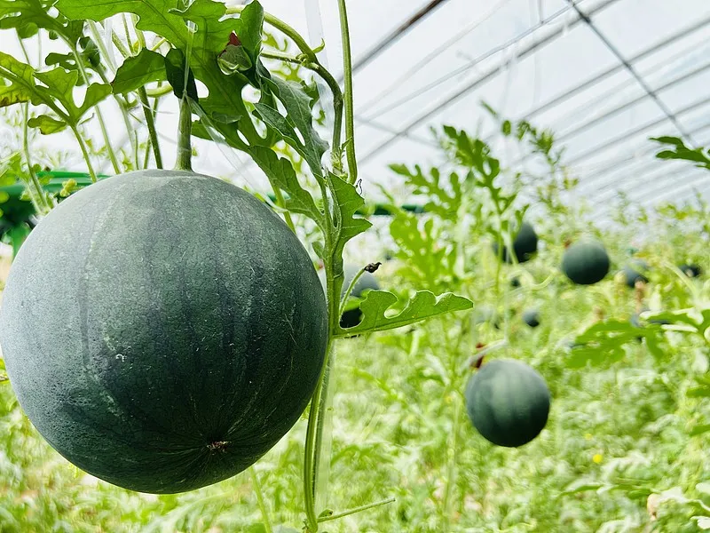
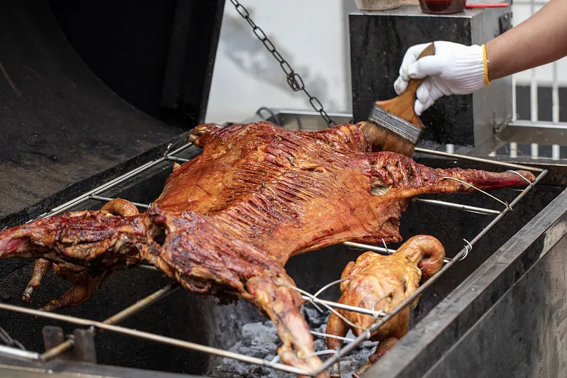
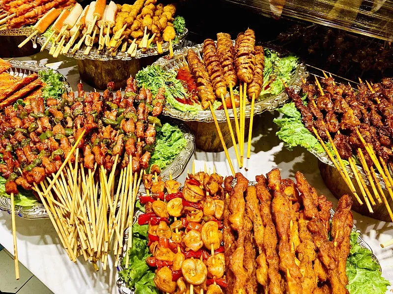

新疆葡萄甲天下，尤其以吐鲁番的葡萄最负盛名。这里主要种无核 白葡萄，还有马奶子、红葡萄、喀什喀尔、百加干、琐琐等13个品种。其果实成球形、卵 形。椭园形等，有的葡萄晶莹如珍珠，有的鲜似玛瑙，而有的绿若翡翠。那五光十色、翠绿 欲滴的鲜葡萄，令人垂涎不止。尤其是这里生产的无核白葡萄，皮薄、肉嫩、多汁、味美、 营养丰富，素有“珍珠”美称，其含糖高达 20-24%，超过美国加利福尼亚州的 葡萄，居世界之冠，用无核白鲜葡萄晾制的葡萄干，含糖量高达 60%，被人们视为葡萄中 的珍品。
库尔勒香梨皮极薄，带皮入口后没有任何残渣感觉，采摘时，从树 上掉下来，即成碎片，入口消融，甘甜酥脆，汁液丰富，味美甘甜、酥脆爽口，是目前国内 外梨品种都无法媲美的。
新疆伽师瓜皮色墨绿、果肉橘红脆甜。伽师瓜又名卡拉库赛瓜，是 新疆甜瓜，也就是哈密瓜的一个独特的品种，因为新疆喀什地区伽师县所产的瓜最好，所以 叫做伽师瓜。与新疆其他西甜瓜不同的是，伽师瓜每年9月才开始上市，一直可以储存到第 二年的4、5月份，以其优良的品质和独有的晚熟、耐储存特性而响誉海内外。
新疆蟠桃大鲜艳，肉质细腻，甘甜可口，味道鲜美，果实中富含多 种营养成份功效：食用后可以补心活血、清热养颜、润肠通便、帮助消化。
新疆无花果具有“水果皇后”的美名，品质优良，风味独特，它在 塔里木盆地大量栽培，以阿图什种植最多，年产果子二百多亩。其时果甘甜多汁，味芳香， 堪兴岭南香蕉和奶油椰丝比美，除鲜果入市外，还可做果干和果酱。果形扁圆，果皮黄色， 果肉细软，营养丰富，果味甘甜如蜜。果实除食用外，还可健胃清肠，消肿解毒。无花果的 果实极为鲜嫩，不易保存。果熟时节正是旅游金季，醉人果香扑鼻而来，集市、街边，都有 果农、小贩用柳条筐、搪瓷盆盛满扁圆、金黄的无花果招徕顾客。鲜果入口，香甜软糯，如 吃奶油椰丝点心，令人赞不绝口。

烤全羊是新疆最名贵的菜肴之一,它可与北京烤鸭、广州脆皮乳猪 相媲美。高级筵席中，如果有烤全羊餐车出现在宾客们中间，整台筵席将顿时生辉，显得格 外豪华阔绰，为饮宴增添了异常丰富的色彩。烤全羊所以如此驰名，除了它选料考究外，就 是它的别具特色的制法。新疆羊肉质地鲜嫩无膻味，在国际国内肉食市场上享有有盛誉。烤 全羊色泽黄亮，皮脆肉嫩，鲜香异常 。

正宗新疆羊肉串,肉又香又嫩. 这里圣传一句话,新疆的羊走的是黄 金大道,吃的是天然中草药,喝的是天山雪水,也就是矿泉水,肉能不香嘛~新疆的羊全身都是宝。
抓饭维吾尔语称“波劳”。其原料有大米、羊肉、胡萝卜、洋葱和
清油(植物油)。抓饭的花样很多，人们除了用羊肉做抓饭外，还用牛、马、鸡、鹅、雪鸡、
野鸡等肉来做抓饭。除此而外，还用葡萄干、杏干、桃皮子等干果做抓饭，称这为荤抓饭或
素抓饭。
馕的品种很多，大约有五十多个。常见的有肉馕、油馕、窝窝馕、 芝麻馕、片馕、希尔曼馕等等。馕的一般做法跟汉族烧饼很相似。在面粉（或精粉）中加少 许盐水和酵面，和匀，揉透，稍发，即可烤制。添加羊油的即为油馕；用羊肉丁、孜然粉、 胡椒粉、洋葱末等佐料拌馅烤制的乃为肉馕；将芝麻与葡萄汁拌和烤制的叫芝麻馕，等等。
新疆大盘鸡。 辣椒、鸡肉、洋芋、大葱，其大盘鸡在取其浓浓的 乡土风味，成为新疆菜式的一种标志，因此新疆人对起源也就格外关心起来。上世纪末，先 是乌鲁木齐市郊的柴窝堡打出“正宗柴窝堡大盘鸡”的旗号与沙湾争持；本世纪初，又有伊 宁市加入进来，打出“伊犁大盘鸡”号令周边地区并向外延展，欲三分天下。一源清流，遂 成混水。沙湾是大盘鸡的故乡，也是大盘鸡每一味可口菜品的真实故乡。说沙湾大盘鸡就是 从沙湾的土里直接长出来的，也不为过。
拌面，维吾尔语叫“兰格曼”。是新疆美食的一张名片，吃拌面游 新疆成为许多游客新疆之旅难忘的细节。拌面，俗称拉条子：一种不用擀、压的方法而直接 用手拉制成的小麦面制品，加入了佐餐的拌面菜，是新疆各族群众都喜欢的一种大众面食， 特别是维吾尔族和回族等民族的拉条子别有一番风味。新疆气候寒冷，小麦生长期长，面粉 筋道，有嚼头，最适宜做拉条子。